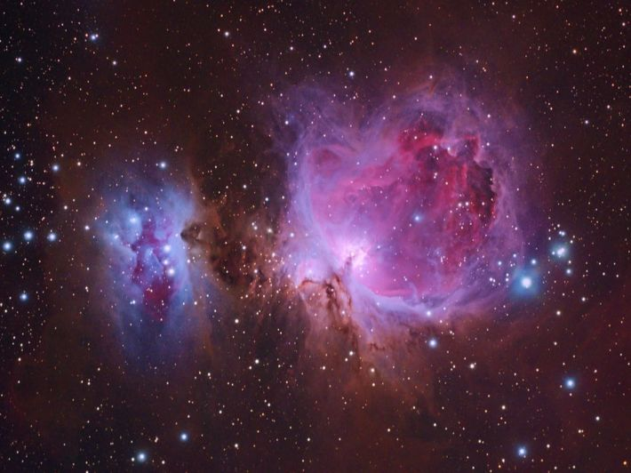
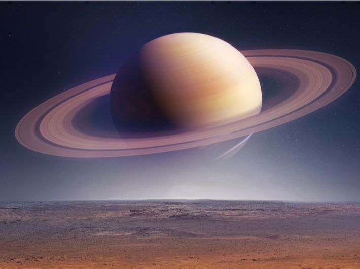
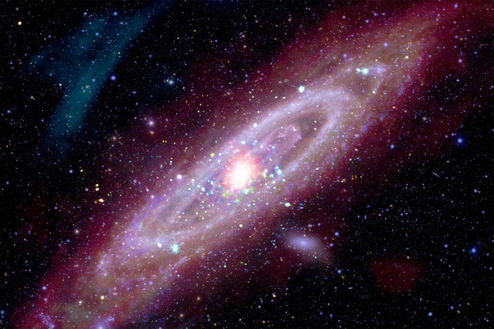
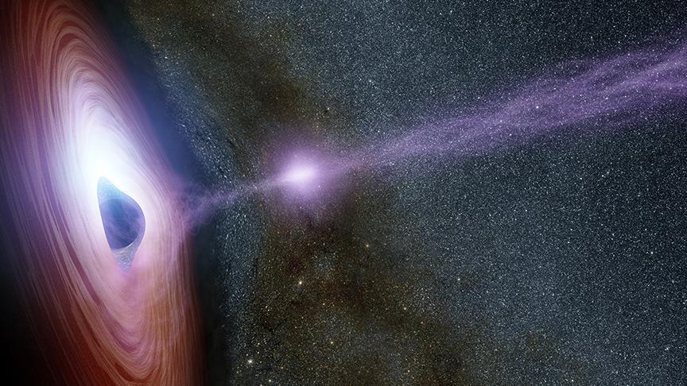
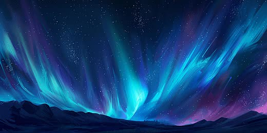

سديم الجبار
يُعرف بـ "حضانة النجوم"، حيث تولد فيه آلاف النجوم الجديدة من الغاز والغبار الكوني.

كوكب زحل
ملك الحلقات المذهلة المكونة من الجليد والصخور، وهو الكوكب الذي يمكنه الطفو فوق الماء!

مجرة أندروميدا
أقرب مجرة كبرى إلينا، تحتوي على تريليون نجم وتتجه نحو التصادم مع مجرتنا مستقبلاً.

الثقب الأسود
منطقة ذات جاذبية فائقة لا يمكن حتى للضوء الهروب منها، وتمثل لغزاً كبيراً في الفيزياء.

الشفق القطبي
أضواء طبيعية ساحرة تتراقص في السماء القطبية نتيجة تفاعل جسيمات الشمس مع جو الأرض.